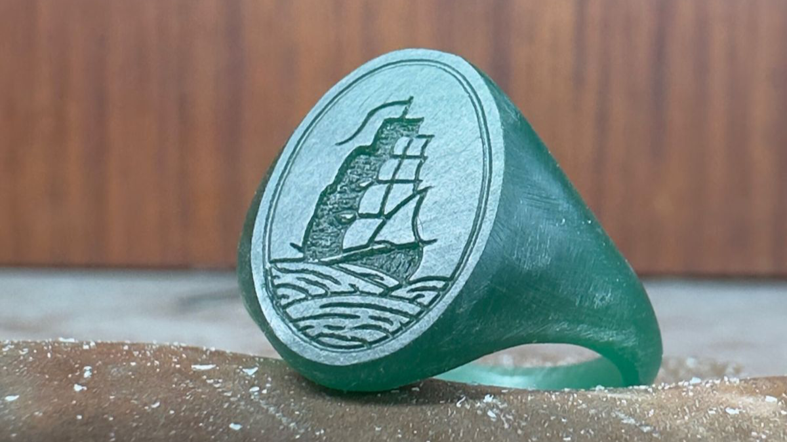
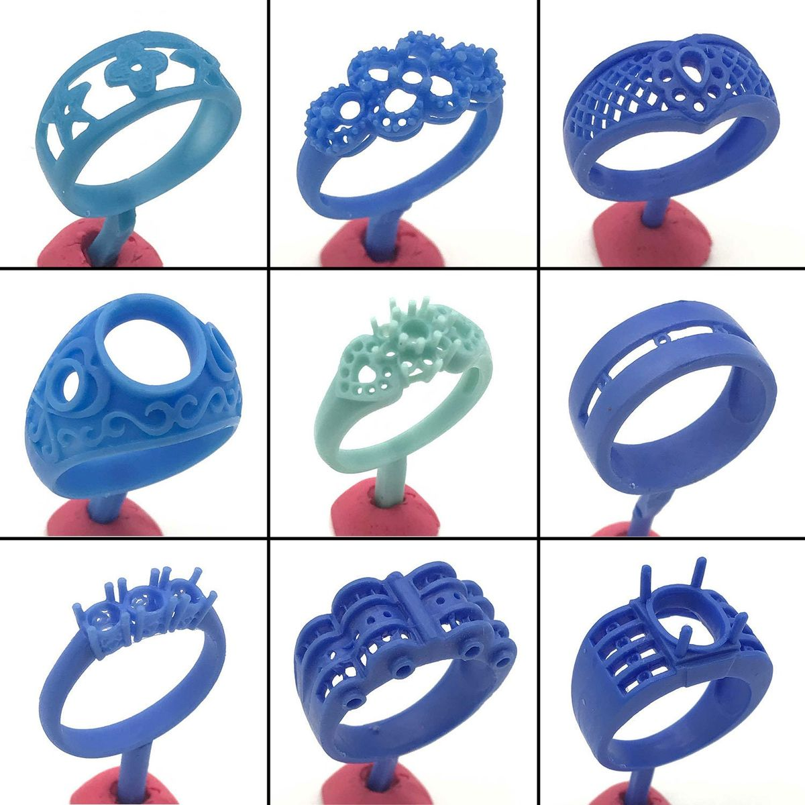
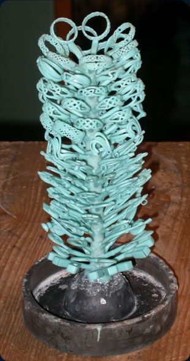
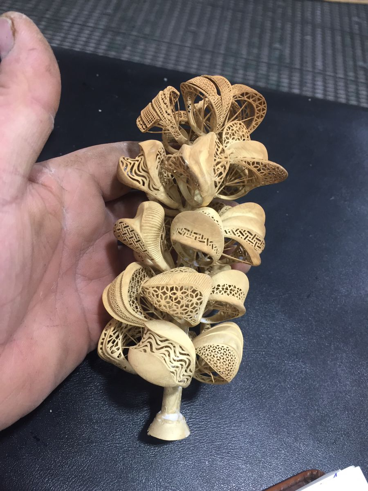
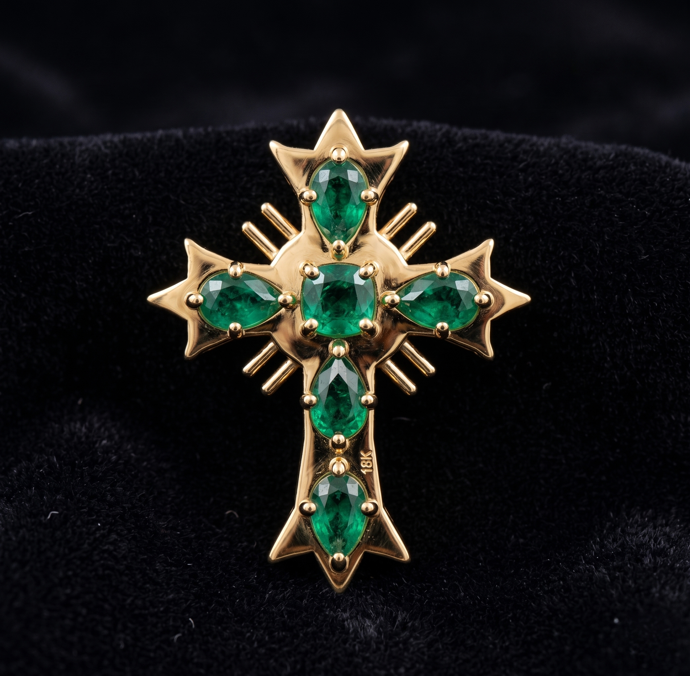
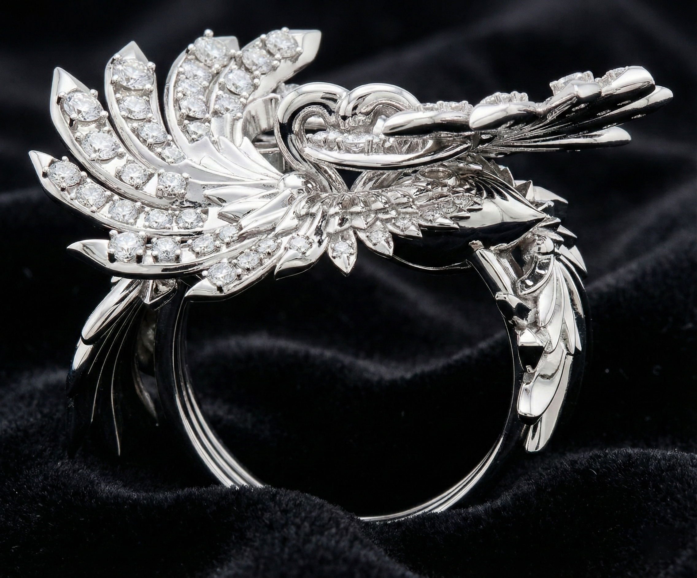

Conceptualization
Initial sketching and style definition. We transform abstract ideas into clear visual directions through detailed illustrations.



Transition to physical. 3D printing in ultra-high resolution castable resins to validate volumes and thicknesses before metal.



The birth of metal. Utilizing traditional lost-wax techniques to transform the fragile prototype into gold, platinum, or silver.



Manual perfection. Exhaustive polishing, microscopic gem setting, and final quality control for an immaculate masterpiece.
I am José Alberto Ascanio, a 3D jewelry designer specialized in transforming complex concepts into production-ready pieces.
Over 500 references developed for mass production, optimizing times, costs, and quality control.
I work with B2B brands seeking premium designs, precise technical modeling, and an efficient transition between design and production.
Technical 3D jewelry development for luxury brands and manufacturers.
500+ production-ready jewelry models delivered